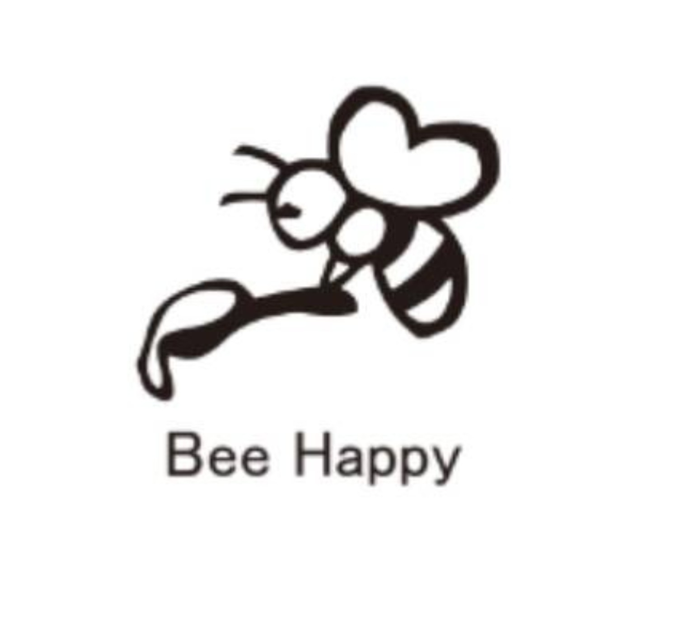

れんげ
やさしい甘さと、ふわりと広がる花の香り。
RENG E HONEY
さとのわ養蜂研究所SATONOWA BEEKEEPING LAB.
OUR HONEY
同じ場所で採れても、季節が変われば香りも色も変わります。さとのわ養蜂研究所は、神戸の里山でみつばちと向き合い、加熱せずに瓶詰めしたはちみつを届けています。
※1歳未満の乳児には、はちみつを与えないでください。
SEASONAL COLLECTION
その年、その季節に出会えた味を。色・香り・余韻まで、ひとつひとつ違います。
やさしい甘さと、ふわりと広がる花の香り。
RENG E HONEY澄んだ色合い。すっきり上品な口あたり。
ACACIA HONEY香ばしさと深いコク。個性が際立つ味わい。
CHESTNUT HONEY栗／野ばら／菜の花／ヘアリーベッチ／アカシア／みかん／れんげ／ゴールデンロッド／センダン／シイ／クローバー
ONLINE SHOP
さとのわ養蜂研究所の商品は、公式オンラインショップでご購入いただけます。
OUR STORY
はちみつを採ることだけが、養蜂ではありません。花を訪れるみつばちを通して、自然の循環を知り、里山を次の世代へつないでいくこと。私たちは養蜂を、暮らし・学び・地域を結ぶ小さな入り口だと考えています。
TV / MEDIA
神戸の農村地域で里山暮らしを探究する、さとのわ養蜂研究所代表・佐藤麻由美の活動をご覧いただけます。
BEEKEEPING SCHOOL
巣箱の扱い方から、みつばちの生態、採蜜まで。里山の現場で学ぶ「Satonowa Style」の養蜂スクールを開いています。
養蜂スクールについて詳しく見る →CONTACT
公式LINEまたはメールからお気軽にお問い合わせください。
satonowa3@gmail.com